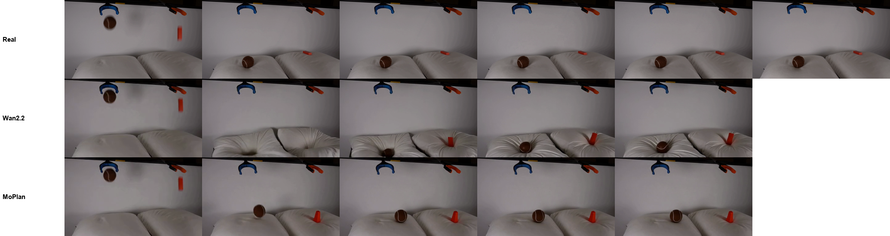
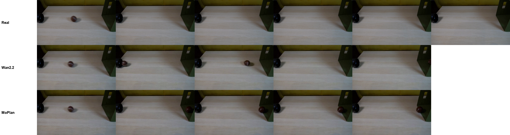
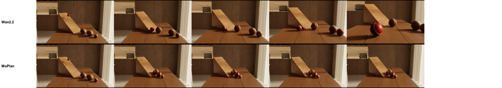
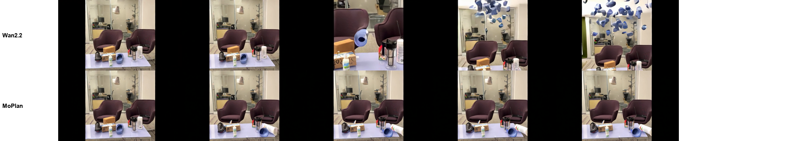

MoPlan: video comparisons with the untrained base model
Each example uses the same first frame, the same text and the same random seed for both models, under the same generation protocol (448×256). The base model is the untrained Wan2.2-I2V-A14B; MoPlan is our final model, which predicts an object-level motion plan from the first frame and the text and generates the video conditioned on it. Where it is available, the real continuation is shown on the left.
Examples were chosen by watching the videos, not by score alone: we kept only cases where the physical event is right and the difference from the base model is visible. MoPlan does not fix every case; the paper reports the aggregate results.
left: real video (when shown)middle: untrained Wan2.2, same seedright: MoPlan
Physical events on Physics-IQ
Out-of-domain real experiments from Physics-IQ. The real video is the recorded continuation after the conditioning frame.
A ball drops into a crate (Physics-IQ)
In the real video the ball drops through the opening and stays in the crate. The untrained Wan2.2 bounces the ball back out and rolls it off screen; MoPlan drops it into the crate, where it stays, as in the real video.
Frames over time
A rubber duck falls into a box (Physics-IQ)
In the real video the gripper releases the duck and it falls straight into the box. The untrained Wan2.2 invents a long rod that lowers the gripper into the box and lifts it again (a fabricated agent); MoPlan lets the duck fall into the box.
Frames over time
A ball and a block fall onto pillows (Physics-IQ)
In the real video the ball lands on the left pillow and the red block on the right one. The untrained Wan2.2 redraws the pillows and sinks the ball into a crater; MoPlan lands the ball and the block on the two pillows, as in the real video.
Frames over time

Two balls collide and separate (Physics-IQ)
In the real video the blue ball rolls to the lower left and the yellow ball to the upper right after the collision. The untrained Wan2.2 makes the yellow ball jump to the lower-left corner and back; MoPlan separates the two balls along the real directions.
Frames over time
A ball rolls into a box (Physics-IQ)
In the real video the ball keeps rolling right into the box. The untrained Wan2.2 first rolls it to the left, then back; MoPlan rolls it steadily right to the box opening.
Frames over time

A mug drops onto a brick (Physics-IQ)
In the real video the clamp releases the mug and it falls onto the brick and breaks. The untrained Wan2.2 invents a blue robot arm that slowly lowers the mug; MoPlan lets the mug fall onto the brick (it does not break).
Frames over time
The camera stays fixed when the object moves
The real camera is fixed. Image-to-video models often move the camera with the object; MoPlan generates the object's motion in a camera-independent plan, so the camera stays still.
Putting a sheet of paper down: the camera should not move
The real camera is fixed while a hand puts a sheet of paper on the table. The untrained Wan2.2 pushes the camera in and tilts it down to follow the paper; MoPlan keeps the camera fixed and lays the paper flat, as in the real video.
Instruction: A hand moves the paper down.
Frames over time
Pulling a duster left to right: the camera should not follow
The real camera is fixed while a hand pulls a duster to the right. The untrained Wan2.2 pans the camera with the duster (the background slides); MoPlan keeps the camera still and moves only the duster.
Instruction: A hand pulls the duster from left to right.
Frames over time
Pushing a cup toward a plate: the camera should not push in
The real camera is fixed and the cup is nudged toward the plate. The untrained Wan2.2 pushes the camera in and lifts the cup onto the plate; MoPlan keeps the camera fixed and moves the cup slightly toward the plate, as in the real video.
Instruction: A hand moves the cup closer to the plate; the plate stays where it is.
Frames over time
A cricket ball rolls down a ramp (rendered scene)
A cricket ball rolls down the ramp into a row of balls; the camera is fixed. The untrained Wan2.2 pushes the camera in on the ball; MoPlan keeps the camera fixed and the ball rolls down into the balls below. (The reference clip is not shown.)
Instruction: A cricket ball is rolling down the ramp toward a row of objects. Static shot, locked-off camera, fixed tripod, stationary framing. No camera movement, no pan, no tilt, no zoom, no dolly, no drift, no handheld shake. Real-time playback at natural speed, 24 fps, no slow motion, no time-lapse. Realistic rigid-body physics: gravity, momentum, friction, and collisions consistent with reality. Photorealistic, continuous single take, no cuts. Motion begins on the first frame.
Frames over time

No fabricated agents or objects
Falling objects with no person in the frame. The untrained model invents a cause or new objects; MoPlan moves only the objects that are in the first frame.
Two boxes fall at the same time (real scene)
Two boxes fall in a scene with no person and a fixed camera. The untrained Wan2.2 conjures a giant box that fills the frame while the camera moves; MoPlan keeps the camera fixed and the blue-and-white box lands on the floor. (The reference clip is not shown.)
Instruction: A white box and a blue and white box fall at the same time.
Frames over time
A paper cup falls (real scene)
A paper cup falls in a scene with no person and a fixed camera. The untrained Wan2.2 pushes the camera in and fills the air with blue debris; MoPlan keeps the camera fixed and the cup lands on the table. (The reference clip is not shown.)
Instruction: A grey paper cup falls.
Frames over time

Following the text
The motion plan is predicted from the text, so the named object moves. This is the failure MoPlan helps least with; we show one of the few clear successes.
The named object moves: pen vs. spoon
One first frame, two instructions. Top: "move the pen toward the red spoon; the spoon stays" (the real event). Bottom: "move the red spoon toward the pen; the pen stays" (the opposite). MoPlan follows both; the untrained Wan2.2 picks the spoon up and waves it under the opposite instruction. Such successes are rare on our test data: overall, MoPlan does not significantly reduce this failure.